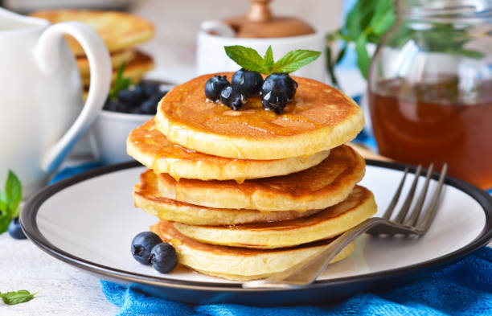

Receta de Hot Cakes

Revisa nuestro blog.
Ingredientes:
- 3/4 Taza de Leche Evaporada CARNATION® CLAVEL®
- 1 Huevo
- 2 Cucharadas de mantequilla, fundida
- 1 Cucharadita de esencia de vainilla
- 1 Taza de harina para hot cakes
- 2 Cucharadas de mantequilla
- 1/2 Taza de moras azules
- 1/2 Taza de fresas, desinfectadas y cortadas en cuartos
- 6 Hojas de menta, desinfectadas
- 1 Envase de Leche Condensada LA LECHERA® Sirve Fácil
Preparación:
- Mezcla la Leche Evaporada CARNATION® CLAVEL® con el huevo, 2 cucharadas de mantequilla fundida, la esencia de vainilla y la harina para hot cakes.
- Calienta una sartén, agrega un poco de mantequilla y con ayuda de un cucharón vierte un poco de la mezcla para formar los hot cakes; cocina por ambos lados y repite el procedimiento con el resto de la preparación.
- Sirve los hot cakes, decora con moras azules, fresas, las hojas de menta y con un poco de Leche Condensada LA LECHERA® Sirve Fácil. Ofrece.